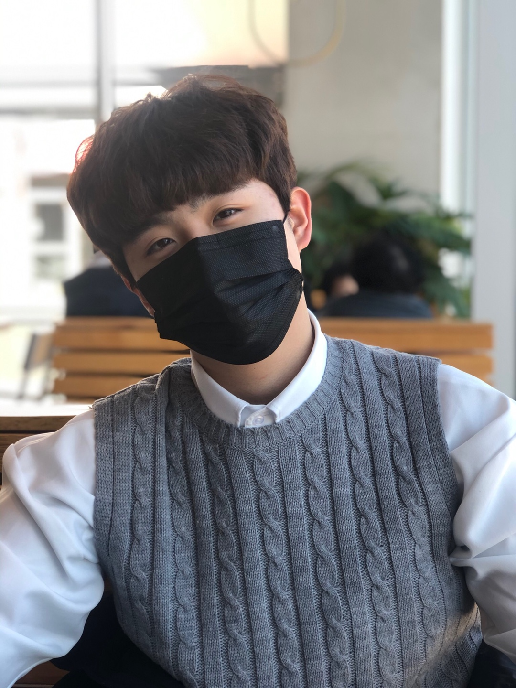

임규민은 인천과학고를 24기로 졸업하였고, 이후 고려대학교 환경생태공학부 20학번으로 재학중입니다. 생물과 화학을 좋아하여 환경생태공학부에 들어갔지만, 경영 이중전공을 희망하고 있으며, CEO라는 또 다른 꿈을 향해 나아가고 있습니다. 스타트업에 관심이 많으며 경영 이중전공을 하려는 이유 또한 CEO로서 경영, 회계, 재무 등의 역량을 키워나가기 위함입니다.
그는 분명히 원하고자 하는 바를 이루고, 세계에 영향력을끼치는 인물로 성장해나갈 것입니다. 2026년, 그는 타임즈 선정 세계에서 가장 영향력 있는 인물 TOP30에 꼽혔으며, CEO 중 최연소 나이로 유니콘 기업의 CEO로 활동하고 있습니다.